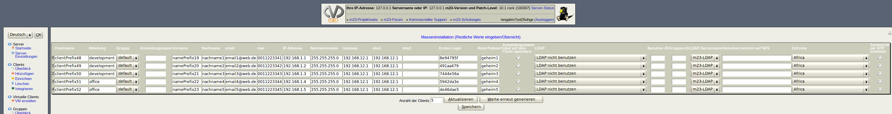

Nächste Seite:
Anzahl der Clients ändern
Aufwärts:
Masseninstallation
Vorherige Seite:
Generator-Optionen
Inhalt
Restliche Werte eingeben/Übersicht
Hier sehen Sie die Übersicht über alle zu erstellenden Clients. Nun können Sie die Lücken in den Tabellen füllen bzw. Werte ändern und überprüfen, ob die vorhandenen Werte Ihren Vorstellungen entsprechen.

Unterabschnitte
Anzahl der Clients ändern
dodger 2014-08-06